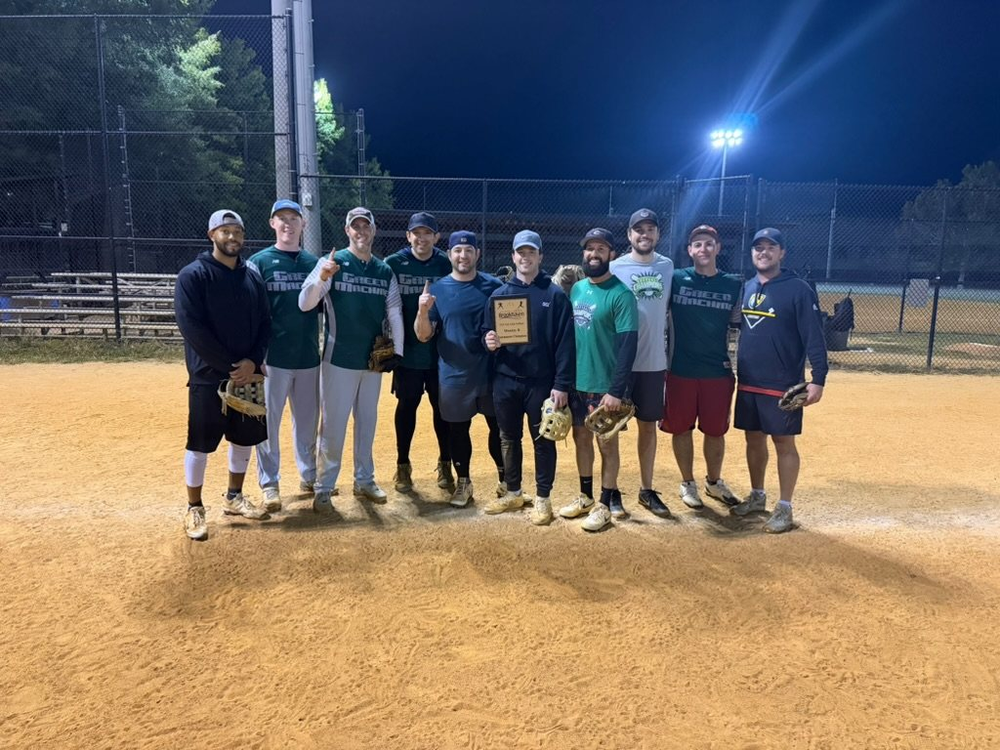

The Long Way Around
Green Machine went 4-0, lost the regular-season title on run differential, limped into the playoffs, then beat two of its oldest rivals in one night to win the Brookhaven Monday B League’s Fall 2026 championship.

Bottom of the seventh
BROOKHAVEN, Ga. — Green Machine led 19-17 when Double Dime came to bat in the bottom of the seventh inning, and the lead was in trouble right away. Double Dime's first two hitters both got hits. The third lined a ball straight back up the middle, hard enough that it looked headed for center field and a one-run game.
Max Gertz, Green Machine's pitcher, got a glove on it. The deflection rolled toward Sam Nadel, who scooped it on the run, stepped on second and threw to first for a double play. It was Green Machine's third double play of the night. Instead of two on with nobody out in a one-run game, Double Dime had two outs and a runner on third. Its No. 9 hitter was up, and the team had already used all four of its home runs.
The next hitter grounded sharply to Sam, who threw him out, and Green Machine had won the championship 19-17.
"I was just happy Max kept it in the infield and that maybe we'd saved a run," said Greg Eisenman, the team's manager and first baseman. "But the moment I saw Sam enter my peripheral vision, I knew I had to get to first base and be ready for a throw. It was the culmination of yet another incredible defensive evening on the Green Machine infield, with several very timely DPs."
"I was PUMPED," Greg said. "We all yelled, 'LET'S F---ING GOOOO.' Players were giving each other high fives and victory hugs. It felt great to win late at night, after a short delay due to the lights malfunctioning, and end 2026 with a win. It's always great to win the last one."
Who they are, and what they were chasing
Green Machine is an adult slowpitch softball team that has played in the Brookhaven Monday B League since 2011. This fall was its 15th year. The league plays at Blackburn Park with five teams this season, a limit of four home runs per team per game (any home run past the fourth is scored as an out) and mercy rules for lopsided games.
The team has a long record of winning. This fall's title was its 11th league championship, and it has won 10 regular-season titles. But the 18 months before this fall had been frustrating. Green Machine lost the Fall 2025 final. It won the Spring 2026 regular season and lost the final to Backdoor Slidaz, 28-27. It won the Summer 2026 regular season and lost in the semifinals to Double Dime, 24-7. Two regular-season titles in a row had ended in two playoff exits.
The opponents that mattered were familiar ones. The archive has Green Machine at 18-4 all-time against Backdoor, 17-15 against Bombs over Brookhaven (BoB) and 11-17 against Double Dime. Double Dime is the only one of the three with a winning record against Green Machine.
4-0, barely
The first four wins were closer than the record suggests.
Sept. 28, vs. Backdoor, W 20-15. Green Machine scored nine runs in the fourth and won when time ran out in the fifth. Mark Heard hit for the cycle (single, double, triple and home run in one game) and drove in seven runs. Mikee hit a solo home run and a grand slam in the same inning.
Oct. 5, doubleheader, won by a combined two runs. In the first game Green Machine trailed Double Dime 12-6 going into its last at-bat in the sixth. It scored seven, with Max's grand slam as the big hit, and won 13-12. The second game was wilder. Bombs over Brookhaven scored 12 runs in the first inning, Green Machine answered with seven, and the game was tied or close the rest of the way. With two outs in the fifth, Sam hit a three-run inside-the-park home run down the right-field line to win it 22-21 on the final play. That game also included a three-run homer from Wes, a new sub, in his first game with the team.
Oct. 12, vs. Vick's Dawgs, W 17-6. This was the one easy win. Green Machine ended it early under the mercy rule. Matt Mayfield went 4-for-4.
After four games Green Machine was 4-0, had outscored opponents 72-54, and was the only unbeaten team in the league.
The night it slipped away
Green Machine had two games left on Oct. 19, against Backdoor and Bombs over Brookhaven. Winning either one would have clinched the regular-season title outright. It lost both.
Green Machine batted second in both games. It had offered to swap so a short-handed opponent could hit first while its last player arrived. It lost both games anyway.
In the first game, Sam and Max hit back-to-back home runs in a four-run fifth, and Green Machine trailed only 8-6. Backdoor then scored five in the sixth, and Green Machine lost 13-7. In the second game, Green Machine sent 12 batters to the plate in the first inning, scored seven and led 7-2. Bombs over Brookhaven scored 16 runs in the fourth inning, the largest single inning by any team in Green Machine's games this season, and won 24-13.
The hitting was not the problem. Mark went 6-for-8 with two home runs and six RBI across the two games, and Sam had five hits. But Green Machine allowed 37 runs that night after allowing an average of 13.5 runs per game in its first four.
The losses left Green Machine, Backdoor and Double Dime all at 4-2. Double Dime won the regular-season title on run differential. Green Machine had scored 92 runs and allowed 91, a differential of +1, and entered the playoffs as the second seed.
"We knew we had a chance to come in the playoffs and get those back," Greg said. "We'd beaten these teams throughout the season. I'm just glad the bats came alive and we were able to do it."
“Our team is getting older each year … it’s gratifying to know we can still dominate.”Greg Eisenman
Semifinal: Backdoor, again
Green Machine's semifinal opponent was Backdoor, the team that beat it by one run in the spring final and by six runs a week earlier.
It was over quickly. Max hit a two-run homer in the first inning, and Green Machine led 5-0. In the fourth, the first nine Green Machine batters reached base and seven scored. Max hit a grand slam, Abe followed with a three-run homer, and Green Machine led 16-4. Sam hit another home run in that inning, but it was scored as an out because the team had already reached the four-home-run limit. Green Machine won 16-6 after four and a half innings.
Max finished the semifinal with two home runs and six RBI. Michael Abrahams, known on the team as Abe, went 3-for-3, and Jordan Abrams, Michael Catone and Abe each scored three runs.
"I wasn't trying to hit it out," Max said. "I was just trying to get a good pitch and put it in play. The guys in front of me did the work."
The final: Double Dime, again
The final opponent was Double Dime, the team that had eliminated Green Machine in the summer and had just taken the regular-season title. It started late, after a delay while the lights were fixed. Every Green Machine player that night was a regular. There were no subs.
It did not start well. Double Dime scored eight runs in the second inning and led 9-3. Green Machine ended that inning on a double play, and Greg felt the ball spinning in his glove at first before he held on. Matt Mayfield had already hit a three-run homer in the top of the second, and Max hit another three-run homer in the third.
The fourth was the first sign that things might turn. Double Dime had the bases loaded when a ball was hit deep to left-center. Mark ran it down at the wall and caught it as he crashed into it, his glove hitting the piping on top of the fence. Without the catch it was a grand slam.
"I knew I had room," Mark said. "The wall just showed up a little earlier than I expected."
Green Machine trailed 12-6 going into the fifth. Max homered to start it. With two outs and the bases loaded, Greg came up against Double Dime's captain and pitcher, Richard Pirkle, Green Machine's longtime antagonist. Pirkle took his time. He called time out and moved his fielders around. Greg called time back to adjust his batting gloves, then lined a ball down the left-field line past left fielder Quickie for a bases-clearing double. He stood at second and yelled, "LET'S GOOOO."
"I've had my struggles this season, which is always frustrating," Greg said. "But it was striking that their captain and pitcher would be so concerned about my potential to do damage. It's almost like he psyched himself out. It felt great to barrel one up and be able to help the team in a big way."
The double cut the deficit to 12-10, and DGold singled Greg home to make it 12-11. Sam singled and Mark walked to load the bases again, but Max's long fly to right came down a few steps short of the fence. Double Dime scored three in the bottom of the fifth and led 15-11.
"We have so much confidence in our lineup," Greg said. "It just felt like we were squaring it up really well, so we knew we had a shot."
The top of the sixth was where Green Machine won the game. It sent 12 batters to the plate and scored seven runs. Jordan led off with a single, and Abe hit a two-run homer. After two outs, the next six hitters all reached base: Jamie LaFramboise, Greg, DGold, Sam, Mark and Max. Jordan came up a second time and singled again. By the end of the inning, Green Machine led 18-15.
"Honestly, I just didn't want to be the guy who made the last out," Abe said. "Everybody in front of me kept getting on. I was along for the ride."
Double Dime scored twice in the bottom of the sixth to make it 18-17. Green Machine got a run back in the top of the seventh, but Sam flew out to left with two runners on to end the inning. That left a two-run lead for the bottom of the seventh, and the double play.
"I knew I had the chance to do damage in the top, so when I flew out, I was ready to go back in the field and make an easy play," Sam said. "Jordan never would have made it so smoothly if he were playing second. Anyways, Max deflected it perfectly and I guess I was in the right spot at the right time. Glad it bounced our way."
Green Machine finished with 27 hits, tied for its second-most of the season. For the second straight game it reached the four-home-run limit, and Matt's home run in the seventh was scored as an out. Among the championship games with box scores in the archive, the 19 runs tie the 2015 D League final for the sixth-most Green Machine has scored, and the two-run margin is tied for the second-closest title-game win.
Season leaders
Minimum 16 plate appearances. Includes playoffs.
| Player | G | AB | H | HR | RBI | R | AVG | OPS |
|---|---|---|---|---|---|---|---|---|
| Mark Heard | 8 | 31 | 26 | 6 | 20 | 20 | .839 | 2.367 |
| Max Gertz | 8 | 32 | 20 | 8 | 23 | 15 | .625 | 2.062 |
| Michael Abrahams | 8 | 27 | 18 | 3 | 14 | 11 | .667 | 1.692 |
| Matt Mayfield | 5 | 16 | 10 | 1 | 6 | 3 | .625 | 1.486 |
| Sam Nadel | 8 | 35 | 20 | 3 | 15 | 17 | .571 | 1.429 |
| Jordan Abrams | 7 | 24 | 15 | 0 | 4 | 11 | .625 | 1.265 |
| Michael Catone | 6 | 23 | 12 | 1 | 6 | 10 | .522 | 1.261 |
| Greg Eisenman | 8 | 27 | 14 | 0 | 7 | 10 | .519 | 1.144 |
| Jamie LaFramboise | 7 | 24 | 11 | 1 | 6 | 10 | .458 | 1.065 |
Playoff leaders
Semifinal and final combined.
| Player | AB | H | HR | RBI | R | AVG | OPS |
|---|---|---|---|---|---|---|---|
| Max Gertz | 8 | 5 | 4 | 11 | 4 | .625 | 2.750 |
| Michael Abrahams | 8 | 7 | 2 | 7 | 5 | .875 | 2.500 |
| Matt Mayfield | 6 | 4 | 1 | 5 | 2 | .667 | 1.958 |
| Mark Heard | 7 | 5 | 1 | 2 | 4 | .714 | 1.893 |
| Jordan Abrams | 7 | 5 | 0 | 1 | 4 | .714 | 1.464 |
By the numbers
- 8 and 23: Max Gertz's home runs and RBI, both team highs. Two of the homers were grand slams: one with the team trailing in the last inning on Oct. 5, one in the semifinal.
- 4 and 11: Max's home runs and RBI in the two playoff games.
- .839: Mark Heard's batting average (26-for-31), plus a cycle on Sept. 28.
- 7-for-8: Abe in the playoffs, with two home runs.
- 3: Double plays Green Machine turned in the final, including the one that saved the title in the seventh.
- 28 and 4: Home runs Green Machine hit in eight games, and home runs it lost to the four-per-game limit.
- +1: Green Machine's regular-season run differential (92 scored, 91 allowed), the margin that cost it the regular-season title.
- 12 to 6: Innings of five or more runs by Green Machine, compared with its opponents.
Depth
New subs and fill-ins helped get the team through the regular season. Ralphie Reidinger went 3-for-3 in his first game, the comeback over Double Dime on Oct. 5. Wes hit a three-run homer in his first game later that night. Kurt Catone had two doubles in the Oct. 12 win. Mikee played twice and went 7-for-8 with three home runs, two of them grand slams. Dave filled in for four games and had six hits. By the playoffs the lineup was all regulars, and DGold reached base three times in the final.
What it means
Green Machine won the regular-season title in the spring and summer and came up short in the playoffs both times. This fall it went the other way. It lost the regular-season title on a tiebreaker after losing its last two games, and then won the championship in one night by beating Backdoor and Double Dime, the two teams that ended its previous two seasons.
It is the franchise's 11th league title and its first since Fall 2024. Over eight games Green Machine allowed 114 runs and never had a comfortable stretch, but it went 6-2 and won the games that decided the title.
"It just felt so good," Greg said. "All of our players last night were regulars, no subs, so to get back to the top of the mountain felt like validation. Our team is getting older each year, and I am in particular, so it's gratifying to know we can still dominate."